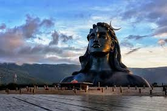
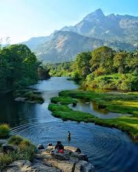

Isha Yoga Centre
I recently visited the Isha Yoga Center, an ashram founded by Sadhguru. Nestled at the foothills of the Velliangiri Mountains, it offers a tranquil environment perfect for spiritual growth and self-discovery. The center is home to the Dhyanalinga, a unique meditative space, and the 112-foot tall Adiyogi Shiva statue, which stands as a symbol of inner transformation. Participating in the various yoga programs and spending time in the serene surroundings was a rejuvenating experience for the mind and soul.

Black Thunder
If you're in the mood for some fun and adventure, Black Thunder is the place to be! This sprawling water theme park, located at the foothills of the Nilgiris, offers a plethora of thrilling rides and attractions. From wave pools and lazy rivers to high-speed water slides and roller coasters, there's something for everyone. The lush green surroundings and the exhilarating rides make Black Thunder a perfect spot for a day out with family and friends. The joy and laughter shared while splashing around in the water make for unforgettable memories.
Anaikatti Hills
For nature lovers and adventure seekers, the Anaikatti Hills are a must-visit destination. Located on the border of Tamil Nadu and Kerala, these hills offer stunning views and a serene atmosphere. The area is rich in wildlife, including elephants, deer, and various bird species, making it a great spot for wildlife enthusiasts. Hiking through the lush forests and enjoying the fresh mountain air is a refreshing escape from the city's hustle and bustle. The picturesque landscapes and tranquil environment make Anaikatti Hills a perfect place for a weekend getaway.
